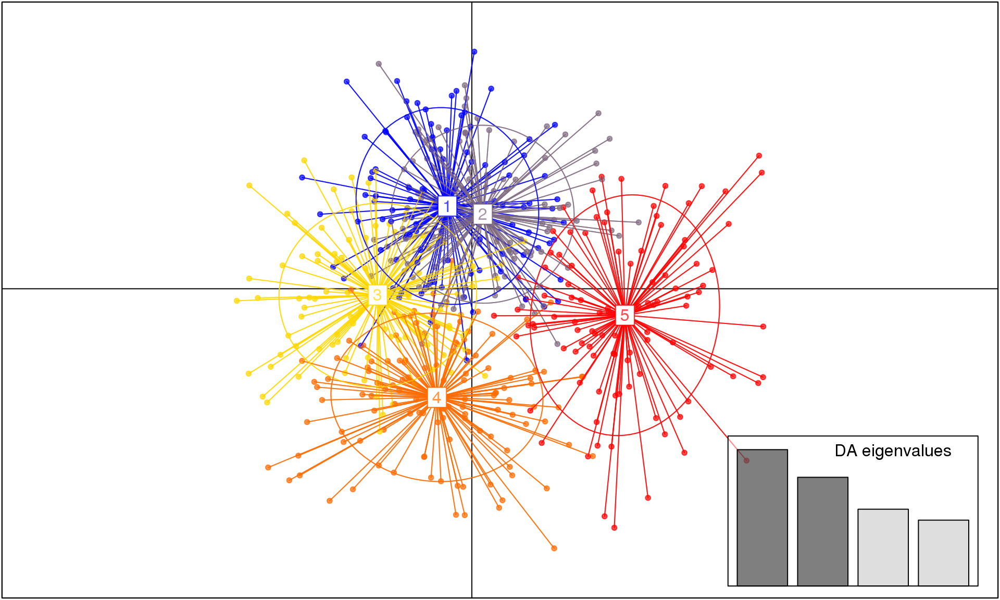

In this vignette, we will discuss how to assess population genetic structure from SNP data at population level. We will estimate \(F_{st}\) per population, Pairwise \(F_{st}\), AMOVA (Hierarchical \(F_{st}\)). We will finally assess the genetic structure at individual level assuming that we do not know populations using a multivariate analysis.
The dataset used for those analysis concerns the plant: lodgepole pine (Pinus contorta, Pinaceae). You can have more information on this data set and the species on the web site of A. Eckert: (http://eckertdata.blogspot.fr/). But here the dataset is used as a test dataset with no idea of interpreting the results in a biological way. We will work on a subset of the dataset to make the calculations faster.
library(adegenet)
library(hierfstat)The data are stored in a text file (genotype=AA..). We will import the dataset in R as a data frame, and then convert the SNP data file into a “genind” object.
Dataset “Master_Pinus_data_genotype.txt” can be downloaded here.
The text file is a matrix of (550 rows x 3086 columns). It contains 4 extra columns: first column is the label of the individuals, the three other are description of the region, all the other columns are for the genotypes as (AA or AT…).
When you import the data, you need to be in the right directory.
Mydata <- read.table("Master_Pinus_data_genotype.txt", header = TRUE, check.names = FALSE)
dim(Mydata) ## [1] 550 3086ind <- as.character(Mydata$tree_id) # use later with adegenet (individual labels)
population <- as.character(Mydata$state) # use later with adegenet (population labels)
county <- Mydata$county
dim(Mydata) # 550 individuals x 3082 SNPs## [1] 550 3086To convert Mydata to a “genind” object (adegenet), the input should only contain genotypes. We decrease the number of SNPs to make the calculations faster and keep only 20 SNPs in the object locus. We then convert Mydata1 to a “hierfstat” object (Mydata2).
locus <- Mydata[, 5:24]
Mydata1 <- df2genind(locus, ploidy = 2, ind.names = ind, pop = population, sep = "")
Mydata1## /// GENIND OBJECT /////////
##
## // 550 individuals; 20 loci; 40 alleles; size: 135.7 Kb
##
## // Basic content
## @tab: 550 x 40 matrix of allele counts
## @loc.n.all: number of alleles per locus (range: 2-2)
## @loc.fac: locus factor for the 40 columns of @tab
## @all.names: list of allele names for each locus
## @ploidy: ploidy of each individual (range: 2-2)
## @type: codom
## @call: df2genind(X = locus, sep = "", ind.names = ind, pop = population,
## ploidy = 2)
##
## // Optional content
## @pop: population of each individual (group size range: 4-177)Mydata2 <- genind2hierfstat(Mydata1) basic.stats(Mydata1) # Fst following Nei (1987) on genind object## $perloc
## Ho Hs Ht Dst Htp Dstp Fst
## X0.10037.01.257 0.4986 0.4079 0.4259 0.0180 0.4277 0.0198 0.0422
## X0.10040.02.394 0.4866 0.4971 0.4968 -0.0003 0.4968 -0.0003 -0.0005
## X0.10044.01.392 0.3638 0.4232 0.4931 0.0699 0.5000 0.0768 0.1417
## X0.10048.01.60 0.4261 0.4626 0.4953 0.0327 0.4986 0.0359 0.0660
## X0.10051.02.166 0.0596 0.0613 0.0634 0.0020 0.0636 0.0023 0.0323
## X0.10054.01.402 0.4584 0.4481 0.4761 0.0280 0.4789 0.0308 0.0588
## X0.10067.03.111 0.0879 0.0853 0.0853 0.0000 0.0853 -0.0001 -0.0005
## X0.10079.02.168 0.0833 0.0808 0.0830 0.0022 0.0832 0.0024 0.0263
## X0.10112.01.169 0.0764 0.0766 0.0760 -0.0006 0.0760 -0.0007 -0.0079
## X0.10113.01.119 0.4436 0.4331 0.4294 -0.0037 0.4290 -0.0041 -0.0087
## X0.10116.01.165 0.0399 0.0407 0.0402 -0.0004 0.0402 -0.0005 -0.0105
## X0.10151.01.86 0.1063 0.1113 0.1125 0.0012 0.1126 0.0013 0.0106
## X0.10162.01.255 0.0863 0.0879 0.0862 -0.0018 0.0860 -0.0020 -0.0207
## X0.10207.01.280 0.2875 0.3521 0.3613 0.0092 0.3622 0.0101 0.0254
## X0.10210.01.41 0.1081 0.1108 0.1089 -0.0019 0.1087 -0.0021 -0.0174
## X0.10219.01.433 0.3618 0.3648 0.3656 0.0009 0.3657 0.0009 0.0023
## X0.1022.02.173 0.4346 0.4267 0.4490 0.0222 0.4512 0.0245 0.0495
## X0.10240.01.410 0.4576 0.4530 0.5006 0.0477 0.5054 0.0524 0.0952
## X0.10262.01.558 0.2256 0.2292 0.2305 0.0013 0.2306 0.0014 0.0055
## X0.10266.01.426 0.0677 0.0720 0.0716 -0.0004 0.0715 -0.0005 -0.0059
## Fstp Fis Dest
## X0.10037.01.257 0.0462 -0.2224 0.0334
## X0.10040.02.394 -0.0006 0.0210 -0.0006
## X0.10044.01.392 0.1537 0.1403 0.1332
## X0.10048.01.60 0.0721 0.0790 0.0669
## X0.10051.02.166 0.0354 0.0286 0.0024
## X0.10054.01.402 0.0643 -0.0229 0.0558
## X0.10067.03.111 -0.0006 -0.0293 -0.0001
## X0.10079.02.168 0.0288 -0.0308 0.0026
## X0.10112.01.169 -0.0088 0.0036 -0.0007
## X0.10113.01.119 -0.0095 -0.0243 -0.0072
## X0.10116.01.165 -0.0115 0.0193 -0.0005
## X0.10151.01.86 0.0116 0.0443 0.0015
## X0.10162.01.255 -0.0228 0.0192 -0.0021
## X0.10207.01.280 0.0279 0.1834 0.0156
## X0.10210.01.41 -0.0194 0.0245 -0.0024
## X0.10219.01.433 0.0026 0.0082 0.0015
## X0.1022.02.173 0.0542 -0.0185 0.0427
## X0.10240.01.410 0.1037 -0.0102 0.0958
## X0.10262.01.558 0.0060 0.0160 0.0018
## X0.10266.01.426 -0.0064 0.0591 -0.0005
##
## $overall
## Ho Hs Ht Dst Htp Dstp Fst Fstp Fis Dest
## 0.2580 0.2612 0.2725 0.0113 0.2737 0.0124 0.0415 0.0454 0.0124 0.0168basic.stats(Mydata2) # same as previous, on hierfstat object## $perloc
## Ho Hs Ht Dst Htp Dstp Fst
## X0.10037.01.257 0.4986 0.4079 0.4259 0.0180 0.4277 0.0198 0.0422
## X0.10040.02.394 0.4866 0.4971 0.4968 -0.0003 0.4968 -0.0003 -0.0005
## X0.10044.01.392 0.3638 0.4232 0.4931 0.0699 0.5000 0.0768 0.1417
## X0.10048.01.60 0.4261 0.4626 0.4953 0.0327 0.4986 0.0359 0.0660
## X0.10051.02.166 0.0596 0.0613 0.0634 0.0020 0.0636 0.0023 0.0323
## X0.10054.01.402 0.4584 0.4481 0.4761 0.0280 0.4789 0.0308 0.0588
## X0.10067.03.111 0.0879 0.0853 0.0853 0.0000 0.0853 -0.0001 -0.0005
## X0.10079.02.168 0.0833 0.0808 0.0830 0.0022 0.0832 0.0024 0.0263
## X0.10112.01.169 0.0764 0.0766 0.0760 -0.0006 0.0760 -0.0007 -0.0079
## X0.10113.01.119 0.4436 0.4331 0.4294 -0.0037 0.4290 -0.0041 -0.0087
## X0.10116.01.165 0.0399 0.0407 0.0402 -0.0004 0.0402 -0.0005 -0.0105
## X0.10151.01.86 0.1063 0.1113 0.1125 0.0012 0.1126 0.0013 0.0106
## X0.10162.01.255 0.0863 0.0879 0.0862 -0.0018 0.0860 -0.0020 -0.0207
## X0.10207.01.280 0.2875 0.3521 0.3613 0.0092 0.3622 0.0101 0.0254
## X0.10210.01.41 0.1081 0.1108 0.1089 -0.0019 0.1087 -0.0021 -0.0174
## X0.10219.01.433 0.3618 0.3648 0.3656 0.0009 0.3657 0.0009 0.0023
## X0.1022.02.173 0.4346 0.4267 0.4490 0.0222 0.4512 0.0245 0.0495
## X0.10240.01.410 0.4576 0.4530 0.5006 0.0477 0.5054 0.0524 0.0952
## X0.10262.01.558 0.2256 0.2292 0.2305 0.0013 0.2306 0.0014 0.0055
## X0.10266.01.426 0.0677 0.0720 0.0716 -0.0004 0.0715 -0.0005 -0.0059
## Fstp Fis Dest
## X0.10037.01.257 0.0462 -0.2224 0.0334
## X0.10040.02.394 -0.0006 0.0210 -0.0006
## X0.10044.01.392 0.1537 0.1403 0.1332
## X0.10048.01.60 0.0721 0.0790 0.0669
## X0.10051.02.166 0.0354 0.0286 0.0024
## X0.10054.01.402 0.0643 -0.0229 0.0558
## X0.10067.03.111 -0.0006 -0.0293 -0.0001
## X0.10079.02.168 0.0288 -0.0308 0.0026
## X0.10112.01.169 -0.0088 0.0036 -0.0007
## X0.10113.01.119 -0.0095 -0.0243 -0.0072
## X0.10116.01.165 -0.0115 0.0193 -0.0005
## X0.10151.01.86 0.0116 0.0443 0.0015
## X0.10162.01.255 -0.0228 0.0192 -0.0021
## X0.10207.01.280 0.0279 0.1834 0.0156
## X0.10210.01.41 -0.0194 0.0245 -0.0024
## X0.10219.01.433 0.0026 0.0082 0.0015
## X0.1022.02.173 0.0542 -0.0185 0.0427
## X0.10240.01.410 0.1037 -0.0102 0.0958
## X0.10262.01.558 0.0060 0.0160 0.0018
## X0.10266.01.426 -0.0064 0.0591 -0.0005
##
## $overall
## Ho Hs Ht Dst Htp Dstp Fst Fstp Fis Dest
## 0.2580 0.2612 0.2725 0.0113 0.2737 0.0124 0.0415 0.0454 0.0124 0.0168wc(Mydata2) # Weir and Cockerham's estimate## $FST
## [1] 0.02300324
##
## $FIS
## [1] 0.03090781The function varcomp.glob() produces a Hierarchical \(F_{st}\) (=AMOVA for SNPs or biallelic markers) It is possible to make permutations on the different levels: The function test.g() tests the effect of the population on genetic differentiation. Individuals are randomly permuted among states. The states influence genetic differentiation at a 5% level. With the function test.between(), the counties are permuted among states. The states influence significantly genetic structuring.
loci <- Mydata2[, -1] # Remove the population column
varcomp.glob(levels = data.frame(population, county), loci, diploid = TRUE) ## $loc
## [,1] [,2] [,3] [,4]
## X0.10037.01.257 4.631785e-03 -0.0075801286 -0.0110876895 0.42329020
## X0.10040.02.394 -3.927184e-06 0.0057909958 0.0035980465 0.48979592
## X0.10044.01.392 1.276810e-02 0.0039247749 0.0247870243 0.46198830
## X0.10048.01.60 6.490717e-03 0.0189152357 0.0255163684 0.39741220
## X0.10051.02.166 2.977513e-03 0.0037478140 -0.0001317105 0.11970534
## X0.10054.01.402 1.806575e-02 -0.0002977277 0.0134753262 0.47329650
## X0.10067.03.111 9.490247e-04 -0.0022733109 0.0022479222 0.07339450
## X0.10079.02.168 1.359482e-03 0.0015693361 -0.0020878338 0.07692308
## X0.10112.01.169 5.570862e-04 -0.0011207466 -0.0022195075 0.11151737
## X0.10113.01.119 -3.038733e-03 0.0190331181 -0.0321043585 0.45871560
## X0.10116.01.165 -4.102906e-04 0.0010983394 0.0019041211 0.04204753
## X0.10151.01.86 1.180089e-03 0.0038425248 0.0163965166 0.14180479
## X0.10162.01.255 2.762257e-04 0.0025535687 -0.0007521869 0.09778598
## X0.10207.01.280 2.419336e-02 0.0016539601 0.0286306732 0.38051471
## X0.10210.01.41 -1.206136e-03 0.0040434594 0.0069081606 0.09775967
## X0.10219.01.433 2.608653e-03 0.0035115484 0.0048812171 0.30755064
## X0.1022.02.173 7.258406e-03 0.0006657100 -0.0222437933 0.41198502
## X0.10240.01.410 3.603309e-02 0.0212763776 0.0035015937 0.41263941
## X0.10262.01.558 5.048435e-04 -0.0006787502 0.0310839391 0.15201465
## X0.10266.01.426 -7.102129e-04 0.0020016810 0.0053850735 0.11151737
##
## $overall
## population county Ind Error
## 0.11448482 0.08167778 0.09768890 5.24165877
##
## $F
## population county Ind
## Total 0.02068189 0.03543713 0.05308481
## population 0.00000000 0.01506685 0.03308722
## county 0.00000000 0.00000000 0.01829604test.g(loci, level = population) ## $g.star
## [1] 210.6934 203.5156 213.0705 218.6549 210.6018 255.0171 219.4933
## [8] 207.5602 202.9012 213.7574 195.9749 218.3848 206.5656 179.2706
## [15] 207.5579 220.6664 236.4884 208.8285 224.5286 235.3183 230.2941
## [22] 188.6863 220.7436 236.0795 248.4226 213.0081 215.7191 226.8215
## [29] 208.9257 236.7504 230.7323 214.0669 220.9171 231.3219 201.3551
## [36] 195.8977 239.3856 171.5195 237.8054 232.0407 226.0737 207.4355
## [43] 238.3184 204.7982 205.7900 228.3157 207.0409 192.1674 275.0298
## [50] 220.4765 233.7137 239.4639 213.0208 214.3643 222.2045 182.0788
## [57] 255.5425 195.7195 241.7529 194.9997 247.9693 245.1951 210.2704
## [64] 217.8972 193.3661 210.7789 260.1809 200.4222 218.6201 183.7491
## [71] 266.4201 240.6203 204.1094 242.6263 236.6776 219.6844 215.8902
## [78] 227.2849 256.3734 230.3412 235.8789 224.3053 240.2701 218.0312
## [85] 215.2543 238.8769 229.0837 196.6797 241.1164 249.3866 221.8756
## [92] 210.6626 233.1991 314.9793 227.6340 214.3652 249.4674 185.8574
## [99] 222.5297 378.7654
##
## $p.val
## [1] 0.01test.between(loci, test.lev = population, rand.unit = county, nperm = 100) ## $g.star
## [1] 304.6369 254.5800 243.0460 243.9480 296.7075 272.5627 233.3658
## [8] 255.4786 221.3116 244.8366 239.2172 242.3587 211.6853 276.3761
## [15] 263.8179 286.4648 291.1370 232.4216 207.1468 290.0779 250.6978
## [22] 284.7960 273.7555 269.8062 302.1633 256.1888 224.8561 229.7339
## [29] 226.2551 276.1079 243.5932 254.0203 201.5318 285.5196 264.4942
## [36] 246.8515 242.3970 271.0583 271.4022 243.2230 270.3387 248.5834
## [43] 290.5567 286.1212 281.3959 283.6608 271.2738 223.5574 268.1841
## [50] 279.6119 218.1934 258.9774 233.5668 227.5634 239.2464 273.3640
## [57] 245.9318 221.5252 274.4924 248.8891 238.8878 245.1283 247.1912
## [64] 269.4799 301.1591 286.2132 290.0161 243.6146 265.5976 268.5933
## [71] 277.4650 200.4242 270.4997 274.5127 268.5482 258.5115 218.1944
## [78] 275.2163 278.9709 234.2981 277.3078 262.5435 271.7233 266.9346
## [85] 296.7704 268.4863 268.4534 318.8826 249.9507 257.0223 247.3756
## [92] 209.5364 281.6714 286.6975 258.8519 249.0530 218.6492 248.1783
## [99] 302.6670 378.7654
##
## $p.val
## [1] 0.01genet.dist(Mydata1, method="WC84")## alabama arkansas florida georgia
## arkansas 0.052033165
## florida 0.034205805 0.031222010
## georgia 0.046469226 0.028847476 0.001379763
## louisiana 0.031028123 0.035722729 0.096253248 0.133824385
## mississippi 0.019629941 -0.011045367 0.008707686 0.018627828
## northcarolina 0.009066562 0.057810705 0.033602798 0.035531517
## oklahoma 0.104844418 0.022743098 0.080741693 0.092718257
## southcarolina 0.007107402 0.052707863 0.019836955 0.029831181
## texas 0.038153327 0.013982640 0.025059824 0.046361901
## virginia 0.027303304 0.065029859 0.027697122 0.014916721
## louisiana mississippi northcarolina oklahoma
## arkansas
## florida
## georgia
## louisiana
## mississippi 0.030209963
## northcarolina 0.043365828 0.030048967
## oklahoma 0.070815392 0.061834123 0.116089566
## southcarolina 0.064729942 0.030695068 0.006809538 0.107662986
## texas 0.036298136 -0.025535193 0.046659978 0.033860376
## virginia 0.092337839 0.034121040 0.012476717 0.125242248
## southcarolina texas
## arkansas
## florida
## georgia
## louisiana
## mississippi
## northcarolina
## oklahoma
## southcarolina
## texas 0.052491099
## virginia 0.009878778 0.068423280# No test at the momentWe don’t know the populations and we are looking for. As recommended by T. Jombart, with the function find.clusters() we used the maximum possible number of PCA axis which is 20 here. See detailed tutorial on this method for more information (https://github.com/thibautjombart/adegenet/raw/master/tutorials/tutorial-basics.pdf) In this example, we used choose.n.clust = FALSE but it is nice to use the option TRUE and then you will be able to choose the number of clusters.
# using Kmeans and DAPC in adegenet
grp <- find.clusters(Mydata1, max.n.clust = 10, n.pca = 20, choose.n.clust = FALSE) ## The "ward" method has been renamed to "ward.D"; note new "ward.D2"names(grp)## [1] "Kstat" "stat" "grp" "size"grp$grp## 1066 2040 4004 4005 4018 6009 6013 7033 7056 7069
## 5 1 2 1 5 6 2 3 3 6
## 7088 7105 8001 8061 8068 8076 8120 8195 8203 8222
## 2 4 2 1 2 1 5 1 5 2
## 8223 8231 8237 8301 8302 8303 8304 8305 8307 8308
## 5 2 6 2 1 6 1 2 6 6
## 8309 8310 8313 8314 8316 8317 8318 8319 8320 8323
## 1 5 2 6 2 1 6 2 6 5
## 8324 8327 8328 8329 8330 8332 8333 8334 8335 8336
## 5 2 2 6 3 1 1 4 5 3
## 8337 8338 8339 8340 8342 8343 8344 8345 8346 8347
## 2 2 2 2 5 5 6 5 5 2
## 8349 8350 8351 8352 8353 8354 8355 8356 8357 8358
## 6 2 6 1 2 2 5 6 5 6
## 8364 8365 8366 8367 8368 8369 8370 8371 8372 8373
## 5 2 2 6 2 3 1 5 2 2
## 8374 8375 8376 8377 8378 8379 8381 8382 8383 8384
## 2 3 5 5 1 1 2 2 2 3
## 8385 8386 8387 8388 8389 8390 8391 8392 8393 8395
## 3 1 2 2 6 5 3 2 3 3
## 8400 8402 8403 8559 8565 8567 8568 8569 8570 8571
## 2 3 3 5 6 6 1 5 2 5
## 8572 8573 8574 8601 8602 8603 8604 8606 8607 8608
## 4 2 1 5 2 3 1 3 5 6
## 8609 8610 8611 8613 8615 8616 8618 8619 8620 8621
## 1 3 2 1 6 1 6 3 6 6
## 8622 8624 8626 8628 8629 8630 8631 8633 8634 8635
## 1 3 3 2 6 1 5 2 4 1
## 8636 8637 8638 8639 8640 8641 8642 8643 8644 8645
## 4 1 6 6 3 6 1 6 1 3
## 8646 8647 8648 8651 8652 8653 8654 8655 8656 8657
## 5 3 5 5 6 1 2 3 2 3
## 8658 8659 8660 8661 8662 8663 8664 8667 8669 8670
## 1 1 6 6 3 5 3 1 1 2
## 8671 8672 8673 8674 8675 8676 8677 8678 8679 8680
## 1 3 6 6 1 5 1 6 3 6
## 8683 8685 8686 8687 8688 8689 8691 8692 8693 8694
## 3 3 4 3 5 1 5 5 5 6
## 8695 8696 8697 8698 8699 8700 8701 8702 8703 8704
## 3 6 3 3 6 3 5 5 6 1
## 8705 8706 9003 9006 9015 10005 11010 11503 11532 12008
## 3 2 1 1 3 1 5 6 3 6
## 12012 14010 14015 22212 68087 68088 68090 68095 68130 68131
## 5 3 6 2 5 5 4 4 4 5
## 68133 68134 68135 105A 108A 109B 110B 112C 115B 117B
## 1 5 1 3 5 2 5 1 1 2
## 118B 11A 120A 121C 127A 128A 131B 132B 136C 138A
## 3 1 6 6 3 3 3 5 1 2
## 139B 140B 141A 142B 144C 145A 146C 147A 149B 150A
## 4 4 6 4 3 2 5 6 4 2
## 151A 152B 153B 154C 155B 156C 157A 158B 15A 162A
## 1 2 4 3 3 6 3 1 5 6
## 166B 16A 171A 173A 174A 17C 188A 189A 190A 191A
## 3 1 6 6 5 1 5 3 2 3
## 19A 205B 20A 212A 213A 217C 219A 21A 220A 224A
## 3 4 3 2 1 4 5 4 1 5
## 226C 227C 234B 235A 238A 23A 245B 248A 250C 253A
## 5 2 6 3 3 3 6 3 2 1
## 254C 257B 258A 260B 262A 264C 265A 268A 269A 270C
## 1 1 4 4 4 1 5 2 1 4
## 271A 272B 275A 276B 277A 27A 281A 282B 283C 285C
## 6 2 3 1 1 1 4 4 5 1
## 286B 287C 288C 289A 290C 291C 292C 298B 299C 300C
## 2 4 4 6 3 1 4 6 1 4
## 302A 303C 305A 306A 307A 311A 316B 320C 322A 323B
## 4 5 1 5 6 4 3 4 2 4
## 324A 326A 327A 328B 329B 32A 330A 331B 332C 334A
## 5 3 1 4 3 4 3 3 3 3
## 335A 336A 339B 340A 341C 346A 349B 34A 351A 353C
## 1 6 4 4 6 5 1 4 3 2
## 355A 35A 360B 361B 362C 365B 366A 368B 369A 36A
## 1 5 4 4 2 2 1 6 3 4
## 370C 371B 372A 373B 375A 377B 378B 379B 382A 383C
## 2 5 5 1 3 4 6 6 5 4
## 384A 385B 387A 388B 389A 390B 391C 392A 393C 395A
## 6 4 5 5 1 2 3 1 4 3
## 397A 398C 400C 407A 408C 409B 410A 411C 412C 414A
## 4 5 6 6 6 6 5 1 6 3
## 415A 416B 417A 418A 419B 41C 420B 421A 422B 423C
## 6 1 2 1 1 6 5 2 5 1
## 424B 425B 426B 427C 428C 429B 42A 430B 431B 433B
## 6 5 2 5 6 1 6 3 1 5
## 434B 435C 436A 43B 441C 442C 443C 448C 449A 450B
## 3 4 4 2 6 6 4 1 3 5
## 451B 459A 461A 463A 469C 470A 471B 481A 483A 484A
## 6 4 3 1 1 3 2 5 5 1
## 485A 486B 487C 489B 48B 492C 493A 496B 498B 499A
## 2 1 5 4 4 2 6 4 5 4
## 49A 500B 501A 502C 514A 515A 519B 520B 526A 527B
## 4 6 3 3 4 5 4 1 6 2
## 528C 52A 531A 532A 533A 534A 535C 536A 539A 53C
## 2 4 1 3 3 6 1 4 3 4
## 540A 541A 542C 543C 544B 545A 546C 548C 549A 54C
## 2 4 5 4 6 4 4 5 4 1
## 551C 552A 553B 554A 555C 556A 557B 558A 559A 55A
## 2 5 4 2 4 4 4 4 4 3
## 561A 562A 563A 564B 565C 566B 568B 570A 571A 572C
## 1 4 4 3 6 2 1 5 4 6
## 573C 574B 576A 577B 578B 579A 57A 580A 581C 600A
## 2 1 3 3 3 2 1 2 5 4
## 601A 603A 605B 606B 60A 612C 613A 618A 619A 61A
## 1 6 1 5 2 5 5 4 6 5
## 620C 621A 633B 634C 635A 636C 637B 63B 644B 645A
## 5 5 5 4 5 5 5 2 5 1
## 646A 66A 67C 69A 73B 77B 7A 86C 89C 90C
## 5 6 4 1 2 2 4 1 1 4
## 92A 93C 94C 97B 98A 99C 9A CRO108 CRO120 CRO121
## 4 3 3 2 2 3 4 3 6 6
## CRO133 DF3364 FM406 FM417 FM428 FM442 FM445 S4PT6 SH13 SH7
## 2 5 6 1 5 2 3 4 6 5
## Levels: 1 2 3 4 5 6The K means procedure detected 5 groups. We will use this number of group in the discriminant analysis (function dapc()). On your own dataset, you need to spend more time to estimate the number of clusters.
dapc1 <- dapc(Mydata1, grp$grp, n.pca = 20, n.da = 6)
scatter(dapc1) # plot of the group
Five groups were finally detected and represented by the discriminant analysis. The 11 states are not the good level for population analysis. But we need to remember that we used only 20 SNPs to conduct the analysis.
In this vignette, we learned how to calculate \(F_{st}\) in existing populations and to investigate the effect of population structure on genetic differentiation from hierarchical \(F_{st}\) analysis (like AMOVA in the case of SNP). We also run a multivariate analysis to investigate the genetic structure of the data at individual level assuming no population.
You may now want to move to the estimation of genetic distances
Eckert, A. J., A. D. Bower, S. C. González-Martínez, J. L. Wegrzyn, G. Coop and D. B. Neale. 2010. Back to nature: Ecological genomics of loblolly pine (Pinus taeda, Pinaceae). Molecular Ecology 19: 3789-3805.
Thierry de Meeûs, Jérôme Goudet “A step-by-step tutorial to use HierFstat to analyse populations hierarchically structured at multiple levels.”, Infect. Genet. Evol., vol. 7, no. 6, 2007
This shows us useful information for reproducibility. Of particular importance are the versions of R and the packages used to create this workflow. It is considered good practice to record this information with every analysis.
options(width = 100)
devtools::session_info()## Session info ---------------------------------------------------------------------------------------## setting value
## version R version 3.2.3 (2015-12-10)
## system x86_64, linux-gnu
## ui X11
## language (EN)
## collate en_US.UTF-8
## tz <NA>
## date 2016-02-22## Packages -------------------------------------------------------------------------------------------## package * version date source
## ade4 * 1.7-3 2015-11-22 CRAN (R 3.2.3)
## adegenet * 2.0.1 2016-02-15 CRAN (R 3.2.3)
## ape 3.4 2015-11-29 CRAN (R 3.2.3)
## assertthat 0.1 2013-12-06 CRAN (R 3.2.3)
## boot 1.3-17 2015-06-29 CRAN (R 3.2.1)
## cluster 2.0.3 2015-07-21 CRAN (R 3.2.1)
## coda 0.18-1 2015-10-16 CRAN (R 3.2.3)
## colorspace 1.2-6 2015-03-11 CRAN (R 3.2.3)
## DBI 0.3.1 2014-09-24 CRAN (R 3.2.3)
## deldir 0.1-9 2015-03-09 CRAN (R 3.2.3)
## devtools 1.10.0 2016-01-23 CRAN (R 3.2.3)
## digest 0.6.9 2016-01-08 CRAN (R 3.2.3)
## dplyr 0.4.3 2015-09-01 CRAN (R 3.2.3)
## evaluate 0.8 2015-09-18 CRAN (R 3.2.3)
## formatR 1.2.1 2015-09-18 CRAN (R 3.2.3)
## ggplot2 2.0.0 2015-12-18 CRAN (R 3.2.3)
## gtable 0.1.2 2012-12-05 CRAN (R 3.2.3)
## gtools 3.5.0 2015-05-29 CRAN (R 3.2.3)
## hierfstat * 0.04-22 2015-12-04 CRAN (R 3.2.3)
## htmltools 0.3 2015-12-29 CRAN (R 3.2.3)
## httpuv 1.3.3 2015-08-04 CRAN (R 3.2.3)
## igraph 1.0.1 2015-06-26 CRAN (R 3.2.3)
## knitr 1.12.3 2016-01-22 CRAN (R 3.2.3)
## lattice 0.20-33 2015-07-14 CRAN (R 3.2.3)
## LearnBayes 2.15 2014-05-29 CRAN (R 3.2.3)
## magrittr 1.5 2014-11-22 CRAN (R 3.2.3)
## MASS 7.3-45 2015-11-10 CRAN (R 3.2.3)
## Matrix 1.2-3 2015-11-28 CRAN (R 3.2.2)
## memoise 1.0.0 2016-01-29 CRAN (R 3.2.3)
## mgcv 1.8-11 2016-01-24 CRAN (R 3.2.3)
## mime 0.4 2015-09-03 CRAN (R 3.2.3)
## munsell 0.4.2 2013-07-11 CRAN (R 3.2.3)
## nlme 3.1-124 2016-01-20 CRAN (R 3.2.3)
## permute 0.9-0 2016-01-24 CRAN (R 3.2.3)
## plyr 1.8.3 2015-06-12 CRAN (R 3.2.3)
## R6 2.1.2 2016-01-26 CRAN (R 3.2.3)
## Rcpp 0.12.3 2016-01-10 CRAN (R 3.2.3)
## reshape2 1.4.1 2014-12-06 CRAN (R 3.2.3)
## rmarkdown 0.9.2 2016-01-01 CRAN (R 3.2.3)
## scales 0.3.0 2015-08-25 CRAN (R 3.2.3)
## seqinr 3.1-3 2014-12-17 CRAN (R 3.2.3)
## shiny 0.13.0 2016-01-12 CRAN (R 3.2.3)
## sp 1.2-2 2016-02-05 CRAN (R 3.2.3)
## spdep 0.5-92 2015-12-22 CRAN (R 3.2.3)
## stringi 1.0-1 2015-10-22 CRAN (R 3.2.3)
## stringr 1.0.0 2015-04-30 CRAN (R 3.2.3)
## vegan 2.3-3 2016-01-12 CRAN (R 3.2.3)
## xtable 1.8-2 2016-02-05 CRAN (R 3.2.3)
## yaml 2.1.13 2014-06-12 CRAN (R 3.2.3)